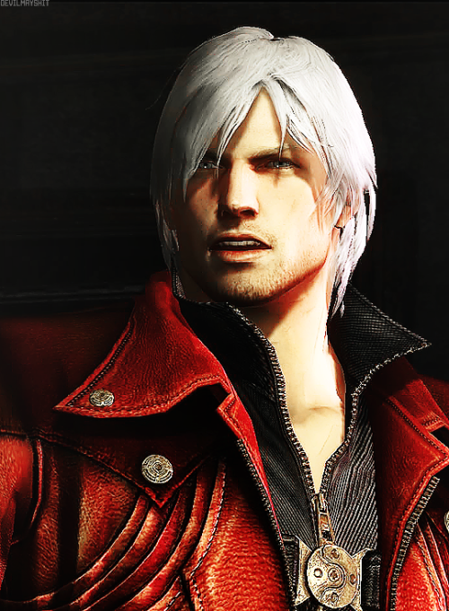
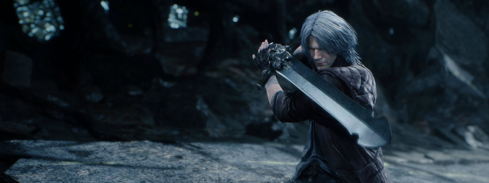

Dante
Dante é o protagonista recorrente da franquia Devil May Cry , e o personagem principal jogável na maioria dos jogos da série. Ele é o segundo filho do demônio Sparda e da humana Eva, o irmão gêmeo mais novo de Vergil. Dante é um mercenário paranormal, investigador particular e vigilante Devil Hunter dedicado a exterminar demônios malignos e outras forças sobrenaturais malévolas.
Uma missão que ele segue em busca daqueles que mataram sua mãe e corromperam seu irmão.

Biografia
Dante e seu irmão gêmeo, Vergil , nasceram do lendário demônio Sparda e da humana Eva. A família morava em uma casa remota perto de Red Grave City. Quando criança, Sparda treinava os meninos e durante grande parte da infância de Dante, ele não percebeu que seu pai era um demônio. Algum tempo antes de seu oitavo aniversário, Eva deu a Dante e Vergil a cada metade do Amuleto Perfeito. Eventualmente, Sparda morreu em circunstâncias desconhecidas, deixando Eva sozinha para cuidar dos gêmeos. Algum tempo depois, eles foram atacados por demônios. Eva foi morta e, embora Vergil e Dante tenham sobrevivido, os gêmeos foram separados e Dante acreditava que Vergil havia morrido. Dante seguiu o último desejo de sua mãe e assumiu uma nova identidade para se esconder dos demônios, adotando o nome de "Anthony 'Tony' Redgrave".
Aparência
Conforme declarado em uma entrevista com o criador da série original Hideki Kamiya no artbook Devil May Cry Graphic Edition , as primeiras idéias que ele teve para o design de Dante foram centradas em torno de três pontos-chave; "casaco longo e elegante" para tornar o personagem "vistoso", "homem britânico", já que Kamiya queria que ele fosse um "lutador espirituoso, mas tradicional" e "não fuma cigarro", acreditando que o personagem era bacana demais para fumar.
Em Devil May Cry 3 , Dante usa jeans longos em tons de bege, luvas pretas sem dedos e botas de estilo militar. Seu casaco tem zíperes nas mangas e uma fivela na cintura, e dois coldres de couro marrom nas costas para transportar Ebony & Ivory . Ao contrário dos jogos posteriores, Dante não usa nenhuma forma de roupa por baixo do casaco, ficando sem camisa durante todo o jogo, exibindo sua metade prateada do Amuleto Perfeito em volta do pescoço, assim como seu peito nu e bem tonificado e físico musculoso. Após a primeira batalha de Dante com Vergil, sua metade do amuleto é roubada e a manga direita de seu casaco está danificada, com Dante rasgando-a depois. Em seu confronto final com Vergil, sua luva esquerda é cortada na palma da mão por Yamato.
No Devil May Cry original e na adaptação do anime , Dante usa calças vermelhas com dois cintos pretos enrolados na coxa direita, um cinto de couro preto, luvas pretas e botas pretas de cano alto. O casaco de Dante tem um design muito básico, com uma gola levantada e mangas curtas com punhos pretos, embora o casaco não tenha abas. Por baixo do casaco, Dante veste o que parece ser uma camisa preta de mangas compridas, com um colete vermelho com fechos pretos por cima. Em várias cutscenes, sua metade do Amuleto Perfeito está mais uma vez em exibição, mas aparece com pouca frequência e não é uma característica permanente em seu modelo de personagem.
Em Devil May Cry 2, A roupa de Dante é uma reminiscência da vista no primeiro jogo, mas com características mais pronunciadas e comoventes. Ele usa botas pretas de cano alto e jeans vermelhos mais uma vez, mas tem um único cinto enrolado em cada coxa. Um cinto com uma fivela com tema de caveira envolve sua cintura, e ele usa luvas pretas em formato de manopla com três tiras de fivela em cada uma. Seu casaco é um vermelho mais profundo do que no jogo anterior, com duas abas, mas o casaco tem uma gola com fivela mais pronunciada e uma alça preta passando por seu ombro direito envolvendo o peito, com duas tachas douradas na frente. A frente do casaco também é padronizada individualmente em relação ao resto, parecendo uma espécie de colete ou armadura corporal, com um zíper fechado da cintura até a nuca de Dante, talvez refletindo sua natureza introvertida vista no jogos.
 Em sua aparição em Devil May Cry 4, A roupa de Dante sem dúvida assume sua aparência mais extravagante. Dante mais uma vez usa calças vermelhas, mas elas estão quase completamente cobertas, sem sua virilha e parte traseira, por longas polainas de couro preto com um desenho de bota de cowboy marrom ao redor dos tornozelos. Ele usa botas pretas que parecem mocassins e luvas pretas expondo os nós dos dedos e o dedo indicador em cada mão, e suas calças são enroladas com um cinto preto com um emblema prateado decorado com uma caveira demoníaca. O casaco tem um visual muito mais detalhado e estiloso, com traços ocidentais e italianos, e um vermelho profundo, quase carmesim. Mais uma vez, o casaco é de mangas curtas, com vários botões dourados decorando os ombros, o colarinho e o peito, e um único zíper na frente, mas Dante nunca é visto fechando o zíper no jogo. Por baixo do casaco, Dante veste um preto, camiseta com zíper com três fivelas fechadas em conjunto com fivelas douradas ornamentadas e mangas de comprimento médio que podem ser vistas passando por seus ombros. Esta camiseta também fecha logo abaixo do pescoço e apresenta uma gola levantada que complementa a do casaco. Outra escolha notável de design diferente da roupa de Dante é seu queixo, coberto com uma barba preta curta, refletindo sua idade avançada, conforme afirmado pelo designer Tatsuya Yoshikawa no Devil May Cry: 3142 livro de artes gráficas que Dante está "por volta dos 40" pelos eventos de Devil May Cry 4.
Em Devil May Cry 5 , a roupa de Dante assume o seu aspecto mais simples. Sua jaqueta vermelha está desbotada, tem uma aparência desbotada, uma caveira nas costas e também lembra sua jaqueta Devil May Cry 4 . Ele veste uma camiseta Henley preta comum com três botões e as mangas chegam até os cotovelos, onde também apresenta detalhes rasgados, para os pulsos ele usa luvas pretas de condução e ataduras brancas. Para as pernas, ele usa uma faixa preta com detalhes dourados, calça de couro preta e botas marrons. Seu cabelo e barba também cresceram depois de ficar em coma por um mês. Isso dá a Dante uma aparência mais suja. A camiseta Henley preta de Dante também aparece em azul escuro durante o dia, quando ele luta com Vergil durante o duelo e a luta no epílogo.
Personalidade
Como visto no início da série, Dante é incrivelmente irreverente, casualmente falando até mesmo para o mais poderoso dos demônios, ele geralmente gosta de se exibir e insultar seus adversários sempre que pode. Dante também exibe uma atitude destemida e quase desinteressada em relação a situações incrivelmente perigosas.
Dante tem um senso de humor muito alto, sua força total é incalculável, talvez sendo um dos personagens mais fortes criados no mundo dos video games até hoje. Dante parece na maioria das vezes não ligar muito para o que acontece a sua volta, como falado a cima, faz deboche de tudo, porém isso é apenas um dos seus meios de defesa para lidar com o seu passado ruim, aonde a sua mãe acabou falacendo em um ataque de demônios, Dante sabe administrar muito bem os seus dois lados, o lado demônio que era de seu pai e o lado humano que era de sua mãe, isso faz dele um personagem forte e com um senso de justiça muito alto, realmente se importando com aqueles que ele realmente ama.
Sempre que uma situação se mostra séria demais, Dante mostra o quão maduro ele é, não importa o tamanho ou poder de seu adversário, ele nunca esboça medo.
